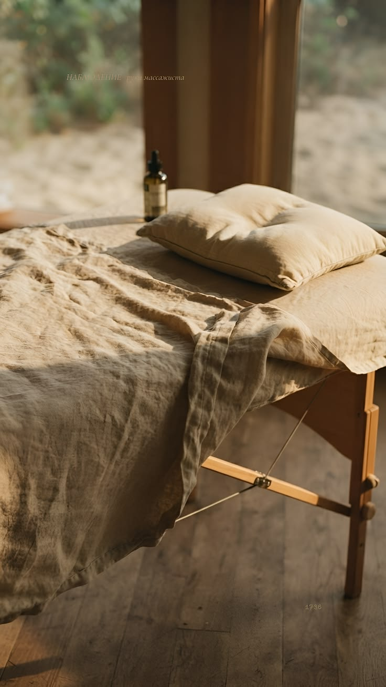
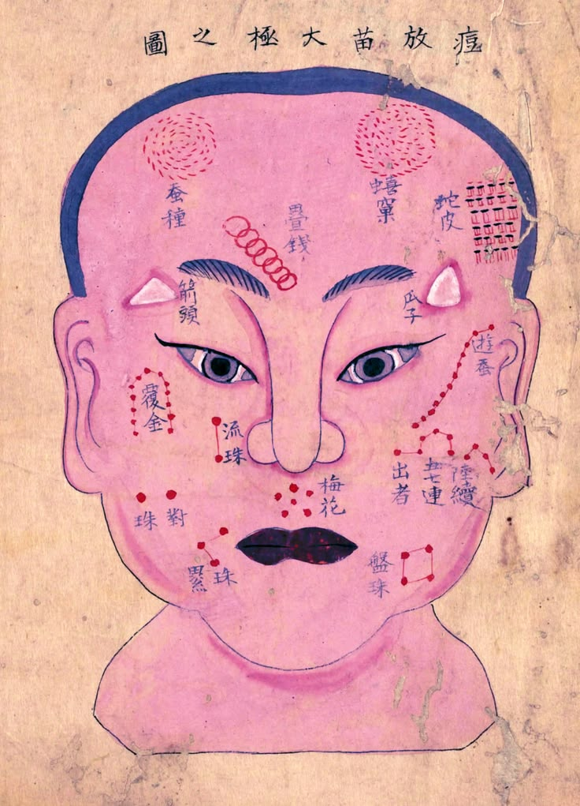
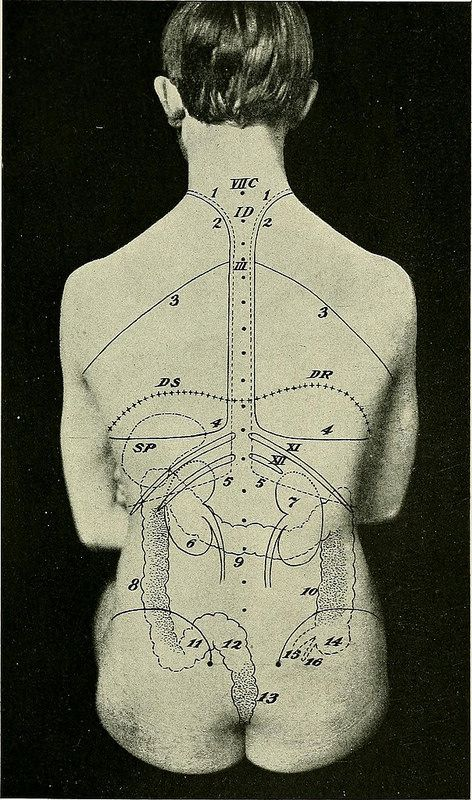

Localizar
Señalas dónde. La sesión se organiza a partir de ahí, no de un protocolo fijo.
Shiatsu · Madrid
Shiatsu corporal · Facial japonés · Madrid

Baja el ritmo, libera tensión y recupera el equilibrio de tu cuerpo.
Shiatsu, dicho sencillo
El cuerpo, en la técnica del Shiatsu, no se lee por músculos sino por recorridos. Por ellos circula el , y a lo largo de cada uno hay puntos —— donde ese recorrido se nota más: se hunden un poco bajo el pulgar y, desde ahí, afloja algo que está a un palmo de distancia. Hay varios cientos repartidos por todo el cuerpo. El Shiatsu los trabaja con dedos y palmas, movilizaciones y estiramientos.
Ki · 気Energía vital que circula por el organismo a través de los meridianos. El Shiatsu trabaja para favorecer su flujo y equilibrio. Tsubo · ツボCada uno de los puntos del recorrido de un meridiano donde la presión tiene efecto. Se reconocen al tacto: ceden un poco bajo el dedo, como una pequeña depresión.Aquí abajo hay nueve. Tienen nombre propio —el pozo del hombro, el manantial que brota— y es bastante probable que alguno hable de algo que llevas encima ahora mismo. Búscalo en la lámina.

El espacio también forma parte del cuidado
“Cuando el cuerpo encuentra equilibrio, la energía vuelve a moverse.”

Sesión adaptada
Archivo · 04 fichasTu sesión se adapta a ti
Una guía breve para conocer qué ofrece cada sesión, cuánto dura y qué puedes esperar de ella.
Sesiones
El cuerpo no llega igual cada día. La técnica se adapta al momento y a la zona; el tiempo lo eliges tú.
Cuerpo · Zona concreta
Para cuando puedes señalar con el dedo dónde te duele.
Pedir cita · Shiatsu corporal, 60 minutos↘Cuerpo entero · Sin prisa
Para cuando la tensión está repartida y necesitas tiempo.
Pedir cita · Shiatsu corporal, 90 minutos↘Rostro · Mandíbula · Cuello
Para la tensión que se acumula donde más se nota: la cara.
Pedir cita · Facial japonés, 50 minutos↘Corporal + Facial · Una cita
El cuerpo y el rostro en una misma cita, sin cortes entre uno y otro.
60 + 50 min · por separado, 105 €
Pedir cita · Sesión completa, 110 minutos↘Quién te acompaña

Soy Eme. Llevo doce años trabajando con personas que llegan con dolor de espalda, tensión en los hombros, rigidez o un cansancio que no termina de irse.
Antes de empezar, hablamos de cómo estás y de qué necesitas ese día. A partir de ahí decido dónde trabajar, con qué presión y a qué ritmo. Si vienes por el cuello, puede que no empiece por el cuello: el origen de una molestia no siempre está donde la notas.
Durante la sesión recibirás presiones con dedos y palmas, movilizaciones y estiramientos. Siempre vestido, con ropa cómoda, y sin forzar. Puedes pedirme más o menos presión en cualquier momento.
No necesitas saber nada de Shiatsu antes de venir. Solo contarme cómo llegas. El resto lo hacemos en la sesión.
No aplico una sesión aprendida: trabajo con lo que tu cuerpo necesita ese día.
Tu primera sesión
No necesitas conocer la técnica ni llegar con una explicación perfecta. La sesión empieza observando cómo está tu cuerpo ese día.

Evita una comida abundante justo antes y llega con unos minutos de margen.
Puedes pedir más o menos intensidad en cualquier momento. El trabajo nunca se fuerza.
Agua, calma y observar cómo responde el cuerpo también forman parte de la experiencia.
Antes de reservar
No. El Shiatsu corporal se recibe con ropa cómoda.
No debería. Se regula durante la sesión y nunca se fuerza.
Sí. Además de la presión, en Shiatsu se movilizan y se estiran brazos, piernas, cadera y cuello. Siempre dentro de tu rango y sin forzar — por eso conviene venir con ropa cómoda.
En Madrid, con cita previa, sobre futón o camilla según la sesión.
Sí. Embarazo, fiebre, una lesión reciente o cualquier condición relevante deben comunicarse antes de la cita.
Siguiente paso
Si ya sabes qué necesitas, pide cita. Y si prefieres entender antes cómo se trabaja, el orientador lo cuenta en cuatro fichas.
Cita · Madrid
Envía tu preferencia y Eme te confirmará la disponibilidad antes de cerrar la cita.
¿Es tu primera sesión? Mira qué puedes esperar
Respuesta habitual en 24–48 horas.
Sin pago online al enviar la solicitud.
Los cambios se gestionan por el mismo contacto.
Solicitud preparada
Revisa el resumen y continúa por WhatsApp. Eme confirmará la disponibilidad antes de cerrar la cita.